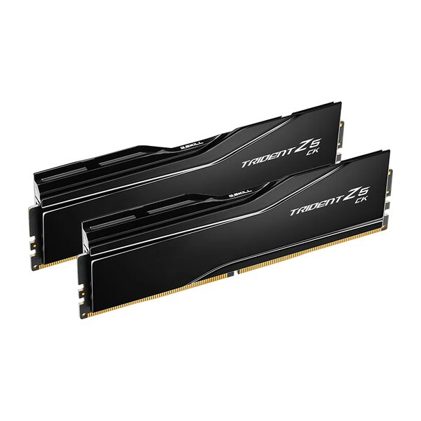
G.Skill Trident Z5 CK
Chưa bán
 4.9Đã bán 5,3k
So sánh
4.9Đã bán 5,3k
So sánh
 5Đã bán 2,9k
So sánh
5Đã bán 2,9k
So sánh
 5Đã bán 445
So sánh
5Đã bán 445
So sánh

 4.9Đã bán 7,7k
So sánh
4.9Đã bán 7,7k
So sánh
 5Đã bán 3,7k
So sánh
5Đã bán 3,7k
So sánh
 5Đã bán 490
So sánh
5Đã bán 490
So sánh

 5Đã bán 1k
So sánh
5Đã bán 1k
So sánh
 5Đã bán 2k
So sánh
5Đã bán 2k
So sánh
 5Đã bán 1,9k
So sánh
5Đã bán 1,9k
So sánh

Laptop (hay còn gọi là máy tính xách tay) là một chiếc máy tính cá nhân (PC) được thiết kế nhỏ gọn, có trọng lượng nhẹ để dễ dàng mang theo và sử dụng ở nhiều địa điểm khác nhau.
Khác với máy tính để bàn (Desktop) cồng kềnh với các bộ phận tách rời, laptop tích hợp tất cả các thành phần thiết yếu vào một khối thống nhất, bao gồm: màn hình, bàn phím, chuột cảm ứng (touchpad), loa và webcam. Đặc biệt, laptop được trang bị pin sạc, cho phép thiết bị hoạt động trong một khoảng thời gian dài mà không cần cắm nguồn điện trực tiếp.
| Thông số (Ký hiệu) | Tên đầy đủ | Chức năng & Ý nghĩa | Ví dụ phổ biến |
|---|---|---|---|
| CPU | Central Processing Unit | Bộ vi xử lý (Chip): Được ví như "bộ não" của laptop, điều khiển mọi hoạt động và tốc độ xử lý dữ liệu. CPU càng cao cấp, máy chạy càng nhanh. | Intel Core i5 - i7, AMD Ryzen 5, Ryzen 7, Apple M1 - M5 |
| RAM | Random Access Memory | Bộ nhớ trong (Bộ nhớ tạm): Lưu trữ dữ liệu tạm thời để CPU xử lý. RAM càng lớn, máy càng chạy đa nhiệm tốt (mở nhiều tab/ứng dụng cùng lúc không bị giật). | 8GB, 16GB, 32GB |
| Ổ cứng | HDD / SSD | Lưu trữ dữ liệu: Nơi cài đặt hệ điều hành và lưu trữ file cá nhân. Hiện nay SSD được ưa chuộng hơn HDD vì tốc độ khởi động máy và sao chép dữ liệu cực nhanh. | SSD 256GB, SSD 512GB, SSD 1TB,... |
| Màn hình | Monitor / Screen | Hiển thị hình ảnh: Quyết định độ sắc nét và không gian làm việc. Cần quan tâm đến kích thước và độ phân giải để có những trải nghiệm tốt nhất. | Kích thước: 13.3 inch, 15.6 inch,... Độ phân giải: Full HD, 2K, 4K,... |
| VGA / GPU | Video Graphics Adaptor | Card đồ họa: Chịu trách nhiệm xử lý hình ảnh, video và game - Card onboard (tích hợp): Dùng cho văn phòng, xem phim, giải trí nhẹ nhàng - Card rời: Dùng cho thiết kế đồ họa, chơi game nặng | Intel Iris Xe (Onboard) NVIDIA RTX 3050, RTX 4060 (Rời) |
| Pin | Battery | Dung lượng pin: Quyết định thời gian sử dụng máy khi không cắm sạc. Thường đo bằng Watt-giờ (Wh). | 45Wh, 70Wh, 99Wh |
| Hệ điều hành | Operating System | Hệ điều hành (viết tắt là OS): phần mềm nền tảng quan trọng nhất của máy tính - "cầu nối" trung gian giữa người dùng và phần cứng, chịu trách nhiệm quản lý tài nguyên và điều hành mọi hoạt động của laptop. | Windows (Microsoft), macOS (của Apple), Linux, Chrome OS (Google) |
| Cổng kết nối | I/O Ports | Giao tiếp thiết bị ngoại vi: Giúp kết nối chuột, USB, máy chiếu, màn hình rời và các thiết bị ngoại vi khác. | USB-A, USB-C (Thunderbolt), HDMI, Jack 3.5mm, VGA |
CPU là bộ vi xử lý chính và là nơi quyết định tốc độ và khả năng xử lý của laptop. Dòng Intel Core trải rộng từ i3, phù hợp cho các tác vụ văn phòng cơ bản, đến i9 cao cấp dành cho thiết kế đồ họa hay gaming nặng. Song song đó, AMD Ryzen với các phiên bản Ryzen 3, 5, 7 và 9 mang lại hiệu suất ổn định cùng mức giá cạnh tranh. CPU càng mạnh, khả năng đa nhiệm, tốc độ render và trải nghiệm chơi game càng mượt mà.

Khám phá hiệu năng mạnh mẽ và khả năng đa nhiệm vượt trội của các dòng chip Intel Core từ i3 đến i9.
Xem thêm: CPU là gì? Các loại CPU được sử dụng rộng rãi hiện nay
RAM đóng vai trò lưu trữ tạm dữ liệu khi máy tính hoạt động, ảnh hưởng trực tiếp đến khả năng chạy nhiều ứng dụng cùng lúc. Với nhu cầu văn phòng hoặc học tập, dung lượng 8GB là mức tối thiểu. Nếu thường xuyên làm đồ họa, lập trình hay chơi game nặng, RAM từ 16GB trở lên sẽ đảm bảo máy không bị giật lag khi xử lý tác vụ phức tạp.

RAM DDR4 16GB+ của Thegioididong: Đa nhiệm mượt mà, hiệu năng vượt trội.
Xem thêm: RAM là gì, có ý nghĩa gì trong các thiết bị điện tử, di động?
Hiện nay, SSD là lựa chọn phổ biến nhờ khả năng khởi động nhanh, truy xuất dữ liệu mượt và tiêu thụ ít điện năng. HDD tuy có dung lượng lớn và giá rẻ hơn nhưng tốc độ chậm hơn đáng kể. Phần lớn laptop hiện nay trang bị SSD 256GB hoặc 512GB, đủ cho nhu cầu lưu trữ hàng ngày, đồng thời cải thiện rõ rệt trải nghiệm so với HDD truyền thống.
GPU là bộ xử lý đồ họa, chịu trách nhiệm render hình ảnh, video và các hiệu ứng trực quan trên màn hình. Có hai loại GPU phổ biến trên laptop hiện nay:

So sánh hiệu năng giữa chip đồ họa tích hợp iGPU Intel Iris Xe và chip đồ họa rời dGPU NVIDIA GeForce RTX 40 Series.
Xem thêm:
NPU là chip xử lý AI chuyên dụng, được tích hợp trực tiếp vào CPU của các thế hệ laptop mới nhất. Khác với CPU (xử lý đa nhiệm tổng quát) và GPU (xử lý đồ họa song song), NPU được tối ưu riêng để chạy các tác vụ trí tuệ nhân tạo với tốc độ cao và tiêu thụ điện năng thấp.
![Hình ảnh quảng cáo về sức mạnh của công nghệ AI, với tiêu đề lớn 'SỨC MẠNH AI TỐI ƯU VƯỢT TRỘI' màu trắng và vàng. Trung tâm là một con chip NPU (Neural Processing Unit) màu đen với chữ 'NPU AI ENGINE' màu vàng nổi bật, đặt trên nền mạch điện tử phát sáng màu vàng. Các tính năng và lợi ích của AI được liệt kê rõ ràng: Hiệu năng AI 40+ TOPS, Xử lý AI siêu nhanh, Tiêu thụ điện tiết kiệm, Nâng cấp chất lượng video và ảnh, Khử tiếng ồn micro thông minh, Tạo sinh nội dung AI trực tiếp trên máy, và Tối ưu hiệu năng & pin khi chạy ứng dụng AI. Logo Thegioididong.com nằm ở góc trên bên phải.](https://cdnv2.tgdd.vn/mwg-static/common/News/0/suc-manh-ai-chip-npu.jpg)
Khám phá sức mạnh AI tối ưu vượt trội với chip NPU, mang đến hiệu năng AI đỉnh cao và tiết kiệm năng lượng.
Hiệu năng NPU được đo bằng đơn vị TOPS chỉ số càng cao, khả năng xử lý AI càng mạnh. Các laptop đạt tiêu chuẩn AI PC (từ 40 TOPS trở lên theo tiêu chuẩn Intel/Microsoft Copilot+) có thể chạy mượt các tính năng như:
Kích thước màn hình laptop phổ biến từ 13 đến 17 inch, độ phân giải Full HD trở lên. Tấm nền IPS hoặc OLED cho màu sắc chuẩn, góc nhìn rộng, phù hợp cả công việc lẫn giải trí. Với laptop gaming, tần số quét cao từ 120Hz đến 240Hz giúp hình ảnh mượt mà, giảm hiện tượng xé hình khi chơi game tốc độ cao.
![Hình ảnh một người đàn ông trẻ đang tập trung nhìn vào màn hình laptop gaming lớn với kích thước từ 13-17 inch, hiển thị cảnh một chiếc siêu xe tốc độ cao trong thành phố tương lai rực rỡ ánh đèn neon. Màn hình laptop nổi bật với độ phân giải Full HD+ (1920x1200) và tần số quét 240Hz, mang đến trải nghiệm hình ảnh mượt mà, sống động. Bên trái, các tính năng chính được liệt kê: kích thước linh hoạt, độ phân giải sắc nét, tấm nền IPS/OLED cho màu chuẩn và góc nhìn rộng, cùng tần số quét cao 120Hz-240Hz giúp giảm xé hình. Dưới cùng, hình ảnh gợi ý laptop phù hợp cho cả công việc và giải trí. Người đàn ông đeo đồng hồ, tay đặt trên bàn phím có đèn nền, trong không gian hiện đại với ánh sáng dịu nhẹ và tai nghe over-ear phía sau.](https://cdnv2.tgdd.vn/mwg-static/common/News/0/laptop-man-hinh-sac-net.jpg)
Màn hình laptop lớn hiển thị sắc nét với tần số quét 240Hz, lý tưởng cho mọi nhu cầu công việc và giải trí.
Laptop văn phòng thường có thời lượng pin từ 6 đến 8 tiếng, đủ dùng cho một ngày làm việc. Laptop gaming do cấu hình mạnh nên pin chỉ kéo dài 3 đến 5 tiếng. MacBook nổi bật nhờ khả năng tiết kiệm năng lượng và thời lượng pin vượt trội so với mặt bằng chung.

So sánh thời lượng pin giữa laptop văn phòng, laptop gaming và MacBook tại Thế Giới Di Động.
Windows là hệ điều hành phổ biến nhất hiện nay, dễ làm quen, tương thích gần như mọi phần mềm và thiết bị ngoại vi. Kho ứng dụng đa dạng, phù hợp từ học tập, làm việc văn phòng đến chơi game, thiết kế. Trong khi đó, macOS nổi tiếng mượt mà, ổn định và bảo mật tốt. Tối ưu khi dùng kèm các thiết bị Apple khác, giúp đồng bộ dữ liệu và công việc liền mạch. Ngoài ra, ChromeOS là hệ điều hành ít phổ biến hơn nhưng nhẹ, khởi động nhanh, tối ưu cho công việc online và dịch vụ đám mây.

So sánh ưu điểm của 3 hệ điều hành phổ biến: Windows, macOS và ChromeOS trên laptop.
Xem thêm: Hệ điều hành là gì? Các loại hệ điều hành trên máy tính, điện thoại
Các laptop hiện nay được trang bị nhiều cổng kết nối như USB-A, USB-C, HDMI và khe thẻ nhớ để phục vụ đa dạng nhu cầu. Thunderbolt 4 là tiêu chuẩn cao cấp cho tốc độ truyền dữ liệu nhanh và khả năng xuất hình ảnh chất lượng 8K.

Laptop trang bị cổng kết nối đa dạng như USB-C, HDMI, Thunderbolt 4 giúp truyền tải dữ liệu siêu tốc và xuất hình ảnh chất lượng cao.
Laptop mỏng nhẹ dưới 1,5kg phù hợp cho người thường xuyên di chuyển, trong khi laptop gaming thường nặng hơn từ 2 đến 3kg để ưu tiên hiệu suất và tản nhiệt.
Dòng laptop văn phòng có đặc điểm là nhỏ gọn và mỏng nhẹ, giúp dân văn phòng và học sinh, sinh viên có thể dễ dàng mang đi học hoặc đi làm một cách thoải mái. Dòng máy tính xách tay này đáp ứng cho những nhu cầu cơ bản như: Word, Excel, Power Point,... hay giải trí nhẹ nhàng. Laptop văn phòng - học tập có mức giá rất phải chăng giúp đại đa số khách hàng có thể dễ dàng tiếp cận.
![Hình ảnh một người đàn ông trẻ tuổi đang tập trung làm việc trên chiếc laptop màu bạc tại bàn gỗ, bên cạnh là cốc cà phê và sổ tay. Phía sau anh, một người phụ nữ cũng đang sử dụng laptop trong không gian văn phòng hiện đại, tràn ngập ánh sáng tự nhiên. Bên trái ảnh là dòng chữ quảng cáo 'Nhỏ gọn mỏng nhẹ, Học tập, làm việc thoải mái' cùng các biểu tượng minh họa: Lông vũ cho 'Mỏng nhẹ, Dễ dàng mang theo', biểu tượng Word cho 'Văn phòng mượt mà (Word, Excel, PowerPoint)', và ví tiền cho 'Giá phải chăng, Dễ dàng tiếp cận'. Dưới cùng là các biểu tượng và chữ 'CÔNG VIỆC', 'HỌC TẬP', 'GIẢI TRÍ NHẸ'. Logo Thegioididong.com hiển thị ở góc trên bên phải.](https://cdnv2.tgdd.vn/mwg-static/common/News/0/laptop-hoc-tap-lam-viec.jpg)
Laptop nhỏ gọn, mỏng nhẹ của Thegioididong phù hợp cho học tập, làm việc và giải trí.
Xem thêm:
Laptop Gaming là dòng laptop phục vụ cho nhu cầu chơi game. Điểm chung của những mẫu laptop gaming là ngoại hình khá hầm hố, mạnh mẽ và cá tính. Về cấu hình, do đặc thù xử lý các thao tác nặng nên dòng máy này cũng cần có một phần cứng khủng với con chip mạnh mẽ, card đồ họa rời giúp xử lý hình ảnh tối ưu.
Ngoài ra, dòng laptop gaming cũng rất quan trọng về vấn đề tản nhiệt. Do CPU và GPU của máy tính làm việc với công suất lớn nên máy tỏa nhiệt rất cao, đòi hỏi phải có hệ thống tản nhiệt tốt giúp máy không bị quá nhiệt.
![Hình ảnh một game thủ đang tập trung chơi game trên chiếc laptop gaming ASUS ROG với màn hình hiển thị cảnh chiến đấu kịch tính giữa robot và binh lính. Game thủ đeo tai nghe chuyên dụng có mic. Bên cạnh là các thông tin về hiệu năng nổi bật của laptop: NPU AI với hiệu năng tối ưu 80+ TOPS, GPU rời xử lý hình ảnh mượt mà, tản nhiệt tối ưu giữ máy mát mẻ, ổn định, cùng AI tích hợp giảm độ trễ và tăng FPS, mang đến trải nghiệm gaming đỉnh cao và hình ảnh sắc nét. Logo thegioididong.com ở góc trên bên phải.](https://cdnv2.tgdd.vn/mwg-static/common/News/0/laptop-gaming-hieu-nang-dinh-cao.jpg)
Laptop gaming hiệu năng toàn diện mang đến trải nghiệm chiến game mượt mà, ổn định với đồ họa sắc nét nhờ NPU AI, GPU rời và tản nhiệt tối ưu.
Với sự phát triển của AI, các dòng Laptop Gaming hiện nay được tích hợp thêm NPU để xử lý AI, xuất hiện ở các dòng máy cao cấp chuyên Gaming như:
Thay vì CPU và GPU phải chịu tải, hiện nay, với NPU có chỉ số TOPS càng lớn, laptop sẽ được tối ưu hiệu năng một cách toàn diện từ render hình ảnh chất lượng cao khi chơi game, giảm thiểu tiêu tốn tài nguyên máy tính và độ trễ đi rất nhiều so với các dòng laptop gaming đời trước.
Xem thêm:
Dòng laptop mỏng nhẹ thường có tiêu chuẩn khắt khe về thiết kế. Để được đánh giá là một chiếc laptop mỏng nhẹ, máy tính phải có độ dày dưới 20mm và cân nặng dưới 2kg đi kèm với đó là màn hình tương đối nhỏ thường là 13 inch hoặc 14 inch. Hơn thế nữa, dòng laptop mỏng nhẹ còn được hoàn thiện phần viền khá mỏng từ đó tạo được sự liền mạch, sang trọng và tăng diện tích hiển thị của màn hình.

Laptop mỏng nhẹ dưới 1.5kg là người bạn đồng hành lý tưởng cho những chuyến công tác hay di chuyển nhiều.
Xem thêm: Top 10 laptop nhỏ gọn, mỏng nhẹ và dễ di chuyển đáng mua nhất hiện nay
Laptop doanh nhân được thiết kế để đáp ứng nhu cầu làm việc chuyên nghiệp với hiệu suất ổn định, thời lượng pin dài và khả năng kết nối linh hoạt. Máy tính xách tay thường sở hữu thiết kế mỏng nhẹ, khung hợp kim hoặc sợi carbon chắc chắn, giúp chịu va đập tốt khi di chuyển. Nhiều mẫu còn được tích hợp các tính năng bảo mật tiên tiến như cảm biến vân tay, nhận diện khuôn mặt hay chip TPM, đảm bảo an toàn cho dữ liệu. Đây là lựa chọn lý tưởng cho người thường xuyên công tác, họp trực tuyến và cần một thiết bị vừa mạnh mẽ vừa thể hiện sự chuyên nghiệp.
![Hình ảnh quảng cáo laptop doanh nhân chuyên nghiệp tại Thegioididong.com, với hai doanh nhân mặc vest đang làm việc trong không gian văn phòng hiện đại. Một người đang tương tác với chiếc laptop Dell màu xám đặt trên bàn, bên cạnh cốc cà phê và tài liệu. Người còn lại nhìn về phía màn hình lớn hiển thị cuộc họp trực tuyến với nhiều người tham gia. Phía bên trái và dưới cùng của ảnh liệt kê các tính năng nổi bật của laptop bao gồm thiết kế mỏng nhẹ, bền bỉ, hiệu năng ổn định, pin dài cả ngày, bảo mật cao cấp (vân tay, khuôn mặt, TPM), kết nối linh hoạt và khả năng xử lý mượt mà mọi tác vụ. Logo Thegioididong.com nằm ở góc trên bên phải.](https://cdnv2.tgdd.vn/mwg-static/common/News/0/laptop-doanh-nhan-chuyen-nghiep.jpg)
Laptop doanh nhân chuyên nghiệp từ Thegioididong.com – Giải pháp toàn diện cho công việc và hội họp hiệu quả.
Xem thêm: Chọn mua laptop cho doanh nhân - Một số hãng laptop không nên bỏ lỡ
Những chiếc laptop loại này thường có dung lượng bộ nhớ trong lớn phù hợp với việc lưu trữ những file dung lượng lớn. Đi kèm với đó là một CPU mạnh giúp xử lý các tác vụ đồ họa nhanh chóng.
Điểm quan trọng nhất trên dòng laptop đồ họa chính là hai yếu tố card đồ họa và màn hình. Những mẫu laptop được chọn thường có card đồ họa rời đi kèm với một màn hình có độ phân giải lớn, giúp xử lý hình ảnh chuyên nghiệp và hiển thị màu sắc trung thực, sống động.
![Hình ảnh ba kiến trúc sư trẻ đang làm việc tập trung trên laptop và màn hình lớn trong một không gian văn phòng hiện đại. Hai người đàn ông đang xem xét màn hình laptop hiển thị mô hình 3D của một ngôi nhà, trong khi người phụ nữ bên cạnh đang thao tác trên laptop với một bản render kiến trúc chi tiết. Màn hình lớn phía sau cũng hiển thị thiết kế kiến trúc. Phía bên trái ảnh là các tính năng nổi bật của máy tính như CPU hiệu năng cao, card đồ họa rời, màn hình độ phân giải cao, bộ nhớ lớn, cùng các biểu tượng phần mềm chuyên nghiệp như Photoshop, Illustrator, After Effects, Premiere Pro và 3ds Max. Bức ảnh nhấn mạnh khả năng xử lý đồ họa mạnh mẽ và chuyên nghiệp.](https://cdnv2.tgdd.vn/mwg-static/common/News/0/thiet-ke-do-hoa-chuyen-nghiep.jpg)
Đội ngũ thiết kế làm việc hiệu quả với laptop hiệu năng cao, xử lý mọi tác vụ đồ họa nặng.
Xem thêm: Tiêu chí chọn laptop đồ họa cho dân thiết kế và kỹ thuật chuẩn nhất
Laptop 2 trong 1 là dòng máy tính xách tay linh hoạt với bản lề 360° hoặc thiết kế tháo rời màn hình, cho phép chuyển đổi giữa chế độ laptop và tablet chỉ trong vài giây. Màn hình cảm ứng hỗ trợ bút stylus giúp dòng máy này trở thành lựa chọn lý tưởng cho học sinh, sinh viên nghệ thuật, nhà thiết kế hay bất kỳ ai cần sự linh hoạt khi làm việc.
Điểm nổi bật của laptop 2 trong 1 là khả năng sử dụng đa chế độ: chế độ laptop thông thường, chế độ lều để xem phim hoặc thuyết trình, chế độ tablet để vẽ tay hoặc đọc tài liệu. Trọng lượng thường dao động từ 1,2 đến 1,6kg, thiết kế mỏng nhẹ, pin đủ dùng cả ngày.

Laptop 2 trong 1 linh hoạt mọi chế độ, tối ưu cho công việc và giải trí.
Các dòng laptop 2 trong 1 phổ biến hiện nay:
| Nhu cầu sử dụng | Loại laptop phù hợp | Tầm giá tham khảo |
|---|---|---|
| Học tập, soạn thảo, lướt web | Laptop văn phòng | 13 – 20 triệu |
| Làm việc chuyên nghiệp, di chuyển nhiều | Laptop doanh nhân | 18 – 30 triệu |
| Thiết kế đồ họa, dựng phim | Laptop đồ họa – kỹ thuật | 20 – 40 triệu |
| Chơi game, streaming | Laptop gaming | 18 – 50 triệu+ |
| Hay di chuyển, ưu tiên trọng lượng | Laptop mỏng nhẹ | 14 – 35 triệu |
| Vẽ tay, dùng linh hoạt tablet/laptop | Laptop 2-in-1 | 25 – 40 triệu |
Xem thêm:
Khi chọn mua laptop, việc lựa chọn một thương hiệu uy tín, chất lượng là yếu tố quan trọng hàng đầu. Những thương hiệu nổi tiếng như Apple, Dell, HP, Lenovo hay ASUS không chỉ đảm bảo về chất lượng linh kiện, độ bền và hiệu năng, mà còn cung cấp chế độ bảo hành, hậu mãi đáng tin cậy. Chọn đúng thương hiệu giúp bạn yên tâm sử dụng lâu dài, tránh rủi ro hỏng hóc, đồng thời tận dụng được các tính năng và phần mềm tối ưu đi kèm với dòng sản phẩm.
Trước khi mua laptop, hãy xác định rõ mục đích chính của bạn. Nếu chỉ dùng cho học tập, văn phòng thì các mẫu máy tính xách tay phổ thông sẽ đáp ứng tốt và tiết kiệm chi phí. Người làm thiết kế đồ họa hoặc dựng phim nên ưu tiên máy tính có cấu hình mạnh, card đồ họa rời và màn hình chất lượng cao. Game thủ sẽ cần laptop gaming với CPU và GPU hiệu năng cao, màn hình tần số quét lớn để có trải nghiệm mượt mà. Việc xác định đúng nhu cầu sẽ giúp bạn chọn được chiếc máy tính xách tay vừa đủ mạnh, vừa tối ưu ngân sách.
Khi chọn mua laptop, hệ điều hành là yếu tố quan trọng quyết định trải nghiệm sử dụng:
![Hình ảnh minh họa 4 hệ điều hành máy tính phổ biến gồm Windows, macOS, ChromeOS và Linux. Mỗi hệ điều hành được hiển thị trên một chiếc laptop riêng biệt với logo và tông màu chủ đạo đặc trưng (xanh dương cho Windows, tím cho macOS, xanh lá cho ChromeOS và vàng cho Linux). Dòng chữ lớn ở trung tâm ghi '4 HỆ ĐIỀU HÀNH 4 TRẢI NGHIỆM RIÊNG BIỆT', bên dưới là các biểu tượng và chú thích về tính năng như 'Linh hoạt đa nhiệm', 'Bảo mật vượt trội' và 'Pin khỏe bền bỉ'. Logo Thegioididong.com xuất hiện ở góc trên bên phải.](https://cdnv2.tgdd.vn/mwg-static/common/News/0/4-he-dieu-hanh-laptop.jpg)
Khám phá 4 hệ điều hành máy tính phổ biến: Windows, macOS, ChromeOS và Linux cùng những trải nghiệm độc đáo.
Khi chọn mua laptop, dung lượng pin là yếu tố quan trọng quyết định thời gian sử dụng liên tục mà không cần sạc. Nếu bạn thường xuyên di chuyển, làm việc ngoài văn phòng hoặc đi học, nên ưu tiên những laptop có pin trên 8 - 10 giờ, giúp làm việc cả ngày mà không lo hết pin. Ngược lại, nếu laptop chủ yếu sử dụng cố định tại nhà hoặc văn phòng, dung lượng pin trung bình vẫn đủ. Ngoài ra, các laptop mới còn hỗ trợ sạc nhanh hoặc quản lý pin thông minh, giúp kéo dài tuổi thọ pin và duy trì hiệu năng ổn định lâu dài.
| Tiêu chí | Nhu cầu cơ bản (Học tập - Văn phòng) | Nhu cầu đồ họa - chỉnh sửa ảnh/video | Nhu cầu gaming - hiệu năng cao | Nhu cầu di động - doanh nhân |
|---|---|---|---|---|
| CPU | Intel Core i3 / AMD Ryzen 3 | Intel Core i5 - i7 / AMD Ryzen 5 - 7 | Intel Core i7 - i9 / AMD Ryzen 7 - 9 | Intel Core i5 - i7 / AMD Ryzen 5 - 7 tiết kiệm điện |
| RAM | 4GB - 8GB | 8GB - 16GB | 16GB trở lên | 16GB (có thể nâng cấp) |
| Ổ cứng | SSD 256GB | SSD 512GB | SSD 512GB - 1TB | SSD 512GB trở lên |
| Card đồ họa | Onboard (Intel UHD, Iris Xe) | Card rời tầm trung (NVIDIA GTX, RTX 3050) | Card rời cao cấp (RTX 3060 trở lên) | Onboard hoặc card rời tiết kiệm điện |
| Màn hình | 14 inch - 15.6 inch Full HD | 15.6 inch Full HD/2K, chuẩn màu sRGB cao | 15.6 inch - 17 inch Full HD/2K/4K, tần số quét cao | 13 inch - 14 inch Full HD/2K, viền mỏng |
| Trọng lượng | 1.5 - 2 kg | 1.8 - 2.5 kg | 2 - 3 kg | Dưới 1.5 kg |
| Pin | 5 - 7 tiếng | 4 - 6 tiếng | 3 - 5 tiếng | 8 - 12 tiếng |
| Tính năng nổi bật | Giá rẻ, dễ sử dụng | Xử lý đồ họa mượt, màn hình chuẩn màu | Chơi game nặng, tản nhiệt tốt | Siêu mỏng nhẹ, bảo mật cao, sạc nhanh |
So với mặt bằng chung của thị trường máy tính xách tay, MacBook không chạy đua về thông số phần cứng thuần túy mà tạo ra sự khác biệt nhờ khả năng tối ưu hóa đồng bộ giữa phần cứng và phần mềm.
Điểm yếu của nhiều laptop hiệu năng cao trên thị trường là máy nhanh nóng và hao pin. Kể từ khi chuyển sang chip Apple Silicon, MacBook đã giải quyết triệt để vấn đề này. Máy có thể xử lý mượt mà các tác vụ nặng (đồ họa, render) nhưng vẫn duy trì nhiệt độ mát mẻ và thời lượng pin thực tế có thể lên tới 24 giờ. Người dùng có thể làm việc cả ngày dài mà không bị phụ thuộc vào nguồn điện.
Khác với sự phân mảnh thường thấy ở một số hệ điều hành khác, macOS được thiết kế độc quyền cho phần cứng của Apple. Điều này mang lại sự ổn định và bảo mật cao. Thực tế cho thấy, một chiếc MacBook có vòng đời sử dụng hiệu quả rất dài (thường từ 5 năm trở lên) mà ít gặp tình trạng giật lag hay suy giảm hiệu năng rõ rệt theo thời gian.
![Hình ảnh quảng cáo từ Thegioididong giới thiệu ba phân khúc MacBook chính: MacBook Air, MacBook Pro và MacBook Neo, mỗi dòng được đặt trên nền đen với ánh sáng vàng nổi bật. Phía trên là dòng chữ '3 PHÂN KHÚC HOÀN HẢO'. MacBook Air (bên trái) được mô tả là mỏng nhẹ, yên tĩnh, di động tối đa, phù hợp cho học tập, văn phòng và không quạt tản nhiệt. MacBook Pro (ở giữa) nhấn mạnh hiệu năng đỉnh cao (M5), khả năng xử lý AI phức tạp mạnh mẽ với Apple Intelligence, và tản nhiệt chủ động cho hiệu suất tối đa, lý tưởng cho đồ họa, lập trình và video chuyên nghiệp. MacBook Neo (bên phải) được giới thiệu với giá dễ tiếp cận, tối ưu chi phí, là lựa chọn lý tưởng cho học sinh, sinh viên, với macOS ổn định, bền bỉ và tin cậy.](https://cdnv2.tgdd.vn/mwg-static/common/News/0/3-phan-khuc-macbook-thegioididong.jpg)
Thegioididong giới thiệu 3 phân khúc MacBook hoàn hảo: Air, Pro và Neo, với các ưu điểm và đối tượng sử dụng khác nhau.
Apple chia Macbook ra làm 3 dòng máy với mục tiêu sử dụng khác nhau:
Nhắc đến laptop, chắc hẳn mọi người không còn xa lạ với thương hiệu "quốc dân" Dell. Thương hiệu laptop Dell nổi tiếng đến từ Mỹ này có số lượng người sử dụng ở Việt Nam thuộc hàng đông đảo nhất nhì. Với ưu điểm là độ bền cao, đa dạng nhiều dòng sản phẩm với nhiều mức giá phù hợp với nhiều đối tượng khách hàng khác nhau. Đi kèm với đó là khả năng nâng cấp phần cứng một cách dễ dàng giúp chiếc máy của bạn có thể sử dụng trong một khoảng thời gian rất dài.
![Hình ảnh quảng cáo các dòng laptop Dell khác nhau trên nền đen. Ở trên cùng bên phải là laptop Dell XPS màu bạc với dòng chữ 'XPS SANG TRỌNG'. Phía dưới bên trái là laptop Dell Inspiron màu bạc với màn hình hiển thị họa tiết trừu tượng nhiều màu sắc, cùng dòng chữ 'INSPIRON MỎNG NHẸ, LINH HOẠT'. Ở giữa là laptop Dell G Series màu đen với màn hình hiển thị cảnh quan vũ trụ hùng vĩ, kèm dòng chữ 'G SERIES GAMING ĐỈNH CAO'. Cuối cùng, phía dưới bên phải là laptop Dell Latitude màu đen với màn hình hiển thị các biểu đồ dữ liệu, cùng dòng chữ 'LATITUDE BỀN BỈ, AN TOÀN'. Phía trên cùng của ảnh có dòng chữ lớn 'DELL ĐẲNG CẤP DÒNG NÀO CŨNG MẠNH' và ba biểu tượng mô tả 'BỀN BỈ CHUẨN MỸ', 'NÂNG CẤP DỄ DÀNG', 'ĐA DẠNG PHÙ HỢP MỌI NHU CẦU'. Logo Thegioididong.com nằm ở góc trên bên phải.](https://cdnv2.tgdd.vn/mwg-static/common/News/0/dell-laptop-dang-cap-cac-dong.jpg)
Các dòng laptop Dell đẳng cấp bao gồm XPS, G Series, Inspiron và Latitude, đáp ứng mọi nhu cầu từ sang trọng đến gaming, mỏng nhẹ và bền bỉ.
Laptop Asus là một cái tên rất quen thuộc với người dùng laptop tại Việt Nam. Những chiếc laptop đến từ thương hiệu này có thiết kế mỏng nhẹ, sang trọng cùng hiệu năng ổn định mang lại cho khách hàng trải nghiệm tuyệt vời. Bên cạnh các dòng laptop phổ thông với giá thành phải chăng, Asus cũng được nhiều người biết đến với dòng sản phẩm cao cấp laptop Asus Zenbook và dòng laptop chơi game ROG nổi tiếng của họ.
![Hình ảnh quảng cáo cho các dòng laptop ASUS đa dạng tại Thegioididong, nổi bật với dòng chữ 'ASUS ĐA DÒNG TRẢI NGHIỆM ĐỈNH CAO' màu vàng và trắng trên nền đen. Bức ảnh giới thiệu ba mẫu laptop ASUS khác nhau: một chiếc ASUS Zenbook mỏng nhẹ màu xám bạc với màn hình hiển thị sóng vàng nghệ thuật ở phía trên bên phải, một chiếc laptop gaming ASUS ROG màu đen với màn hình hiển thị logo ROG phát sáng rực rỡ ở phía dưới bên trái, và một chiếc laptop ASUS màu đen khác nhìn từ phía sau ở phía dưới bên phải. Các tính năng chính được nhấn mạnh bao gồm 'MỎNG NHẸ 1.1KG' (biểu tượng lông vũ), 'HIỆU NĂNG ỔN ĐỊNH INTEL CORE' (biểu tượng chip/bảng mạch) và 'ĐỘ BỀN CHUẨN QUÂN ĐỘI MIL-STD 810H' (biểu tượng khiên). Logo Thegioididong.com màu vàng nằm ở góc trên bên phải.](https://cdnv2.tgdd.vn/mwg-static/common/News/0/asus-laptop-da-dong.jpg)
Khám phá các dòng laptop ASUS đa dạng tại Thegioididong, mang đến trải nghiệm đỉnh cao với thiết kế mỏng nhẹ, hiệu năng ổn định và độ bền chuẩn quân đội.
Ngoài những cái tên kể trên, HP cũng là một thương hiệu tên tuổi trong làng laptop được nhiều người dùng tin tưởng và sử dụng. Hãng cho ra mắt nhiều dòng laptop với những mức giá khác nhau phục vụ cho nhiều đối tượng khách hàng có thể tiếp cận.

Các dòng laptop HP đa dạng, bền bỉ với công nghệ hiện đại, đáp ứng mọi nhu cầu từ làm việc, giải trí đến chơi game.
Tuy không quá mạnh về một mặt nào cụ thể, nhưng chiếc laptop HP ăn điểm trong mắt khách hàng chính là ở sự ổn định mà nó mang lại. Độ bền của máy tính ở mức tương đối cao 8/10 điểm, đi kèm với đó là những trang bị công nghệ, cấu hình và tính năng phù hợp với xu hướng.
Lenovo có lẽ là cái tên không mấy xa lạ với khách hàng Việt Nam, từ khi mua lại mảng máy tính của IBM, hãng đã không ngừng cải tiến và hoàn thiện để đem đến cho khách hàng những sản phẩm đáp ứng được tiêu chí "ngon, bổ, rẻ".
![Hình ảnh quảng cáo tổng hợp các dòng laptop Lenovo tại Thế Giới Di Động, nhấn mạnh hiệu năng vượt trội. Banner hiển thị ba mẫu laptop chính: một chiếc Lenovo ThinkPad màu đen tượng trưng cho sự bền bỉ, ổn định; một chiếc Lenovo Legion gaming với màn hình hiển thị game và bàn phím đèn nền sặc sỡ, biểu trưng cho sức mạnh gaming; và một chiếc Lenovo Yoga mỏng nhẹ, sang trọng với thiết kế xoay gập. Phía trên có dòng chữ 'ĐA DÒNG LENOVO HIỆU NĂNG VƯỢT TRỘI' cùng các biểu tượng mô tả độ bền chuẩn quân đội, hiệu năng mạnh mẽ và giá cả hợp lý. Logo Thegioididong.com nằm ở góc trên bên phải.](https://cdnv2.tgdd.vn/mwg-static/common/News/0/lenovo-da-dong-hieu-nang-vuot-troi.jpg)
Các dòng laptop Lenovo đa dạng về hiệu năng và thiết kế, từ bền bỉ đến gaming và mỏng nhẹ, tại Thế Giới Di Động.
Điểm nổi bật của những chiếc laptop Lenovo chính là thiết kế sang trọng, thời thượng luôn bắt kịp với xu hướng. Độ bền sản phẩm cũng rất "trâu". Hơn hết, những mẫu laptop của hãng được trang bị cấu hình vô cùng mạnh mẽ mà giá bán lại rất "hời". Trong đó, dòng Thinkpad nổi tiếng với độ bền cao, hiệu năng ổn định, trong khi Lenovo Legion lại là cái tên sáng giá trong phân khúc gaming.
Một chiếc laptop Acer sở hữu cho mình một phong cách thiết kế trẻ trung, tao nhã nên rất được lòng nhiều tệp khách hàng khác nhau. So với các sản phẩm cùng phân khúc của những thương hiệu khác, chiếc laptop Acer tỏ ra vượt trội hơn về mặt hiệu năng lẫn giá bán khiến cho nhiều người dùng vẫn tin tưởng sử dụng sản phẩm của thương hiệu này.
![Hình ảnh quảng cáo bộ ba laptop Acer đa dạng tại thegioididong.com, nhấn mạnh thông điệp 'Hiệu Năng Vượt Trội, Giá Trị Xứng Tầm'. Ở trung tâm là laptop gaming Acer Predator màu đen với màn hình hiển thị logo Predator màu xanh và bàn phím có đèn nền chuyển sắc, đặt trên một bệ nâng có chữ 'PREDATOR'. Phía bên trái là một laptop Acer dòng phổ thông mỏng nhẹ màu đen, màn hình hiển thị hình ảnh trừu tượng màu xanh lá cây, đại diện cho thiết kế tinh tế và hiệu năng vượt trội. Phía bên phải là laptop gaming Acer Nitro với bàn phím đèn nền đỏ và màn hình hiển thị hiệu ứng đỏ rực, được mô tả là có cấu hình mạnh mẽ và giá cực hợp lý. Bên trên là các biểu tượng minh họa 4 tính năng chính: hiệu năng mạnh mẽ, tản nhiệt tối ưu, giá hợp lý và độ bền cao. Logo thegioididong.com nằm ở góc trên bên phải.](https://cdnv2.tgdd.vn/mwg-static/common/News/0/acer-laptop-predator-nitro-thegioididong.jpg)
Bộ sưu tập laptop Acer từ thegioididong.com bao gồm Acer Predator, Acer Nitro và dòng Acer tiêu chuẩn, mang đến hiệu năng vượt trội và giá trị xứng tầm.
Đặc biệt, trong phân khúc gaming, Acer đã tạo được dấu ấn với hai dòng sản phẩm nổi bật là Acer Nitro có cấu hình mạnh mẽ, thiết kế năng động với mức giá hợp lý và Acer Predator với thiết kế hầm hố, hệ thống tản nhiệt tối ưu và cấu hình "khủng" sẵn sàng chinh phục mọi tựa game nặng.
Laptop LG
Tuy không quá mạnh về mảng laptop, nhưng LG luôn mang đến cho khách hàng những sản phẩm chỉn chu và được đầu tư bài bản. Ưu điểm nổi bật của chiếc laptop đến từ LG chính là chất lượng hoàn thiện tốt, bàn phím được đánh giá là tốt so với các đối thủ cùng phân khúc. Và đặc biệt chính là hệ thống loa trên các sản phẩm laptop LG mang đến cho người dùng một trải nghiệm tuyệt vời cùng hiệu ứng âm thanh vòm 11 kênh.

Các dòng laptop LG cao cấp như Gram, Ultra PC và UltraGear, mang đến trải nghiệm hoàn hảo với hoàn thiện cao cấp, bàn phím êm và âm thanh vòm 11 kênh.
Chiếc laptop đến từ thương hiệu MSI luôn gây được sức hút với những khách hàng lần đầu nhìn thấy bởi vẻ ngoài hầm hố. Máy tính sở hữu một layout được bố trí hợp lý mang đến cảm giác thoải mái cho người sử dụng. Các dòng laptop MSI còn được trang bị công nghệ màn hình góc rộng cho trải nghiệm tốt hơn.
![Hình ảnh quảng cáo laptop gaming MSI màu đen, nổi bật với màn hình hiển thị logo rồng MSI phát sáng màu đỏ rực trên nền địa hình núi lửa hùng vĩ. Bàn phím có đèn nền RGB đa sắc màu. Bức ảnh giới thiệu các tính năng ưu việt của sản phẩm như thiết kế hầm hố, layout bàn phím hợp lý, màn hình góc rộng 178 độ, âm thanh Dynaudio chân thực và sống động. Phía dưới còn minh họa chi tiết hệ thống tản nhiệt Cooler Boost với quạt và ống đồng làm mát hiệu quả, cùng với chất lượng âm thanh Dynaudio chuẩn phòng thu. Logo MSI và Thegioididong xuất hiện ở góc trên.](https://cdnv2.tgdd.vn/mwg-static/common/News/0/msi-laptop-gaming-tinh-nang.jpg)
Laptop gaming MSI với thiết kế hầm hố, màn hình sắc nét, âm thanh Dynaudio sống động và tản nhiệt Cooler Boost mạnh mẽ.
Dàn âm thanh của máy tính xách tay cũng là một điểm cộng lớn khi được trang bị hệ thống âm thanh Dynaudio cho cảm giác chân thực và sống động. Ngoài ra, máy cũng được trang bị hệ thống tản nhiệt Cooler Boost giúp bạn chơi game mượt mà mà không lo về vấn đề quá nhiệt.
Gigabyte - cái tên vốn quen thuộc trong giới phần cứng PC - đang dần khẳng định chỗ đứng ở thị trường laptop với những sản phẩm cấu hình “khủng”, thiết kế gọn gàng và độ hoàn thiện cao. Từ sinh viên kỹ thuật, dân lập trình đến designer hay game thủ, laptop Gigabyte đều có các dòng máy tính phù hợp:
![Hình ảnh quảng cáo các dòng laptop Gigabyte tại Thegioididong, giới thiệu về sức mạnh toàn diện của thương hiệu. Bức ảnh nổi bật ba mẫu laptop: một chiếc laptop AORUS màu đen mạnh mẽ chuyên về game và đồ họa với màn hình 144Hz, một chiếc laptop Gigabyte A Series màu đen với logo 'A' lớn trên màn hình, và một chiếc laptop Gigabyte Aero màu trắng bạc mỏng nhẹ, tinh tế, chuẩn màu chuyên nghiệp. Các thông số kỹ thuật chính như CPU Intel Gen 12/13, RAM DDR5, NVIDIA GeForce RTX, AMD Ryzen, cùng các ưu đãi hấp dẫn như trả góp 0%, thu cũ đổi mới, ưu đãi cho HSSV và bảo hành chính hãng đều được liệt kê rõ ràng.](https://cdnv2.tgdd.vn/mwg-static/common/News/0/laptop-gigabyte-aorus-aero.jpg)
Các dòng laptop Gigabyte Aorus, A Series và Aero với hiệu năng mạnh mẽ, thiết kế đa dạng cùng nhiều ưu đãi hấp dẫn tại Thegioididong.
Điểm mạnh của laptop Gigabyte không chỉ nằm ở CPU Intel Gen 12/13, RAM DDR5 hay card đồ họa NVIDIA RTX, mà còn là sự kết hợp hài hòa giữa sức mạnh và khả năng di động. Các sản phẩm hiện có mặt tại Thế Giới Di Động với chính sách trả góp 0%, ưu đãi thu cũ đổi mới và nhiều hỗ trợ đặc biệt dành cho học sinh - sinh viên.
Để chọn laptop phù hợp, bạn cần xác định rõ mục đích sử dụng (học tập, văn phòng, thiết kế, chơi game...), sau đó chọn cấu hình tương ứng. Ưu tiên CPU đời mới, RAM từ 8GB, ổ SSD và màn hình Full HD trở lên. Ngoài ra, bạn cũng nên cân nhắc yếu tố thương hiệu, pin, trọng lượng và khả năng nâng cấp.
Điều này phụ thuộc vào từng dòng máy cụ thể:
Do đó trước khi mua bất kỳ chiếc laptop nào tại Thế Giới Di Động, nếu chúng ta muốn nâng cấp máy tính trong tương lai thì có thể hỏi nhân viên tư vấn xác nhận mẫu máy bạn đang xem có nâng cấp được không nhằm đảo bảo chọn được chiếc laptop đúng nhu cầu.
Hiện Thế Giới Di Động có chương trình thu cũ đổi mới áp dụng với một số dòng laptop và máy Mac. Bạn có thể mang laptop đến cửa hàng gần nhất để được thẩm định giá và đổi sang model mới với chi phí bù hợp lý.
Laptop sinh viên nên ưu tiên máy nhẹ, pin tốt, cấu hình ổn để học online, xử lý tài liệu, làm bài tập. Dưới đây là một số dòng sản sản phẩm phù hợp với sinh viên các bạn có thể tham khảo:
Sinh viên nên chọn máy có độ bền cao, cấu hình vừa đủ (RAM từ 8GB, SSD từ 256GB), pin lâu, dễ mang theo. Các dòng như Asus Vivobook, HP Pavilion, Lenovo IdeaPad, Dell Inspiron thường là lựa chọn tốt trong tầm giá 12 - 18 triệu.
Macbook cũng là một trong những lựa chọn tuyệt vời để sinh viên có thể lựa chọn tham khảo mua sử dụng nhờ thiết kế gọn nhẹ, hiện đại. Giá Macbook hơi nhỉnh hơn so với các dòng máy tính xách tay khác từ 17 - 50 triệu đồng nhưng bù lại hiệu năng ấn tượng.
Tham khảo video: Sinh viên có nên mua Macbook để đi học không?

Bạn có thể mua laptop cũ nếu muốn tiết kiệm chi phí, nhưng cần chọn nơi bán uy tín, minh bạch và có bảo hành rõ ràng. Trong đó, Thế Giới Di Động là một địa chỉ đáng tin cậy, cung cấp laptop cũ đã được kiểm tra kỹ lưỡng, bảo hành chính hãng, giúp bạn yên tâm hơn về chất lượng và dịch vụ hậu mãi so với mua trôi nổi bên ngoài.
Tham khảo video: Mẹo mua laptop cũ cho Tân sinh viên 2k7
Nếu bạn chơi game, dựng phim, chỉnh sửa ảnh chuyên nghiệp - nên chọn laptop card rời như NVIDIA GTX 1650, RTX 3050… Ngược lại, card tích hợp như Intel Iris Xe là đủ dùng cho học tập và văn phòng.
Việc chọn laptop hay PC phụ thuộc vào nhu cầu sử dụng của bạn:
Tóm lại: Laptop dành cho sự tiện lợi, PC dành cho sức mạnh và tối ưu chi phí.
Tham khảo video: Nên sử dụng laptop hay PC để làm việc và chơi game?

Thế Giới Di Động cung cấp hàng ngàn mẫu máy tính laptop chính hãng từ các thương hiệu uy tín như Asus, Dell, HP, Lenovo, Acer, Apple…, đầy đủ phân khúc giá và nhu cầu sử dụng. Sản phẩm được bảo hành rõ ràng, hỗ trợ nâng cấp tại hệ thống hơn 3.000 siêu thị trên toàn quốc. Thế Giới Di Động còn mang đến nhiều lựa chọn laptop cũ chất lượng cao với mức giá ưu đãi, giúp bạn tiết kiệm tối đa chi phí mà vẫn đảm bảo hiệu năng học tập và làm việc.
Khi mua laptop tại Thế Giới Di Động, bạn sẽ được hỗ trợ:
 Hướng dẫn cách chơi cờ vua cơ bản, đơn giản cho người mới bắt đầu
Hướng dẫn cách chơi cờ vua cơ bản, đơn giản cho người mới bắt đầu Deep Learning là gì? Đóng vai trò gì trong công nghệ AI?
Deep Learning là gì? Đóng vai trò gì trong công nghệ AI? IDM là gì? Cách khắc phục một số lỗi thường xảy ra với IDM nhanh chóng
IDM là gì? Cách khắc phục một số lỗi thường xảy ra với IDM nhanh chóng Duckduckgo là gì? Ưu, nhược điểm? Có nên sử dụng thay thế Google?
Duckduckgo là gì? Ưu, nhược điểm? Có nên sử dụng thay thế Google? Bass là gì? Những điều bạn cần biết về âm trầm trong âm nhạc
Bass là gì? Những điều bạn cần biết về âm trầm trong âm nhạcGhi chú cho IT
Doc Bài viết liên quan - 6.4 Bước 3: thiếu bài thì lấy thêm theo trang cấp trên
Doc Bài viết liên quan - 6.5 Bước 4: hiển thị khối
Ca này: Tag của Ngành hàng có từ 5 bài, lấy 5 bài mới nhất.
Thứ tự lấy bài, bài mới trước trong mỗi cấp, bài trùng chỉ hiện 1 lần:
1. Tag của Ngành hàng (chính trang) laptop, mặc định: có 22 bài, lấy 5 bài.
Nút Xem tất cả: /blog/chu-de/laptop (trang chủ đề của Tag laptop).
Card bài giống /tin-tuc: ảnh, tiêu đề, tác giả, thời gian; không có nhãn tên hệ.
Vị trí khối: cuối trang, ngay dưới bài viết SEO của trang. Bấm “Bài viết SEO: Không” để xem trang chưa có bài viết SEO: khối nằm cuối nội dung chính, trên chân trang.
Ghi chú cho IT
Doc Bài viết liên quan - 6.4 Bước 3: thiếu bài thì lấy thêm theo trang cấp trên
Doc Bài viết liên quan - 6.5 Bước 4: hiển thị khối
Ca này: Tag của Ngành hàng có dưới 5 bài. Ngành hàng không có cấp trên nên khối chỉ hiện đúng số bài đang có, không lấy thêm.
Thứ tự lấy bài, bài mới trước trong mỗi cấp, bài trùng chỉ hiện 1 lần:
1. Tag của Ngành hàng (chính trang) laptop văn phòng, khai tay để minh hoạ ca này (mặc định sẽ là laptop): có 3 bài, lấy 3 bài.
Nút Xem tất cả: /blog/chu-de/laptop-van-phong (trang chủ đề của Tag laptop văn phòng).
Card bài giống /tin-tuc: ảnh, tiêu đề, tác giả, thời gian; không có nhãn tên hệ.
Vị trí khối: cuối trang, ngay dưới bài viết SEO của trang. Bấm “Bài viết SEO: Không” để xem trang chưa có bài viết SEO: khối nằm cuối nội dung chính, trên chân trang.
Ghi chú cho IT
Doc Bài viết liên quan - 6.4 Bước 3: thiếu bài thì lấy thêm theo trang cấp trên
Doc Bài viết liên quan - 6.5 Bước 4: hiển thị khối
Ca này: không có bài nào khớp, ẩn cả khối, không để khung trống. Trang hiện như chưa có khối.
Thứ tự lấy bài, bài mới trước trong mỗi cấp, bài trùng chỉ hiện 1 lần:
1. Tag của Ngành hàng (chính trang): giả định chưa có bài nào mang Tag này.
Không hiện nút Xem tất cả vì khối ẩn.
Card bài giống /tin-tuc: ảnh, tiêu đề, tác giả, thời gian; không có nhãn tên hệ.
Vị trí khối: cuối trang, ngay dưới bài viết SEO của trang. Bấm “Bài viết SEO: Không” để xem trang chưa có bài viết SEO: khối nằm cuối nội dung chính, trên chân trang.
Chưa bán tại Thế Giới Di Động, thông tin để tham khảo. Xem máy tính để bàn đang bán

Chưa bán
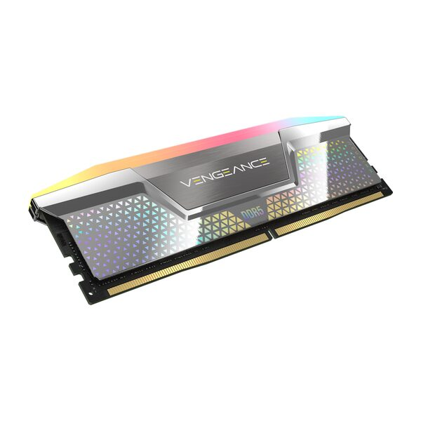
Chưa bán
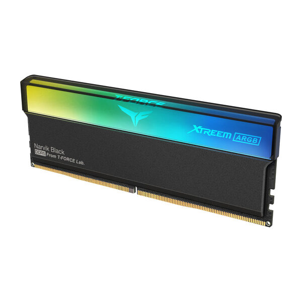
Chưa bán
Tin đồn
Chưa bán
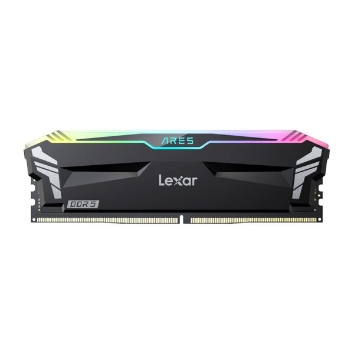
Chưa bán
Tin đồn
Chưa bán
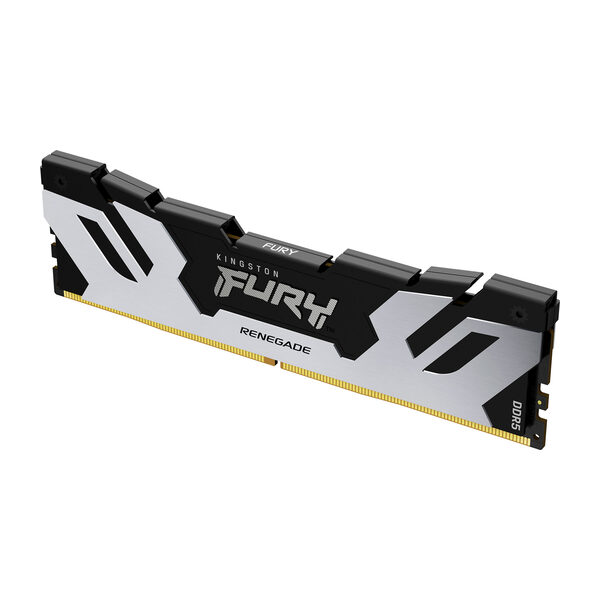
Chưa bán
Tin đồn
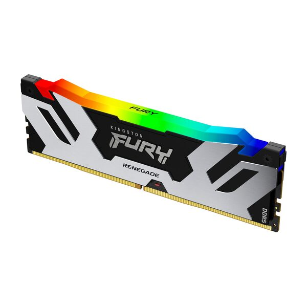
Chưa bán
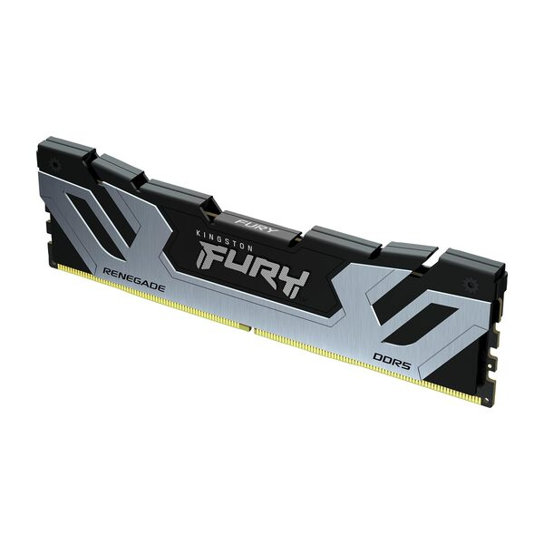
Chưa bán
Chưa bán
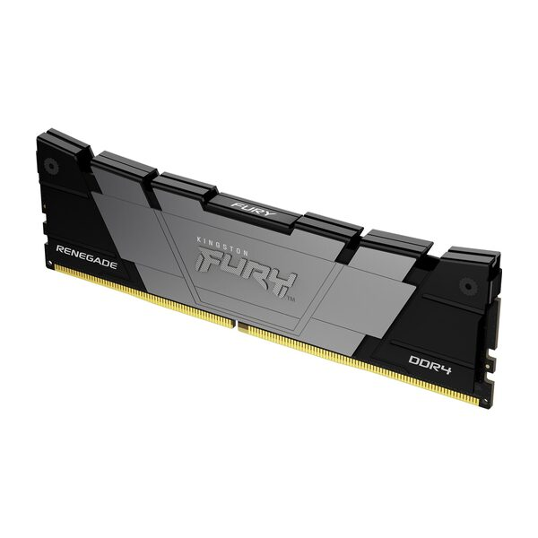
Chưa bán
Chưa bán

Chưa bán
Chưa bán
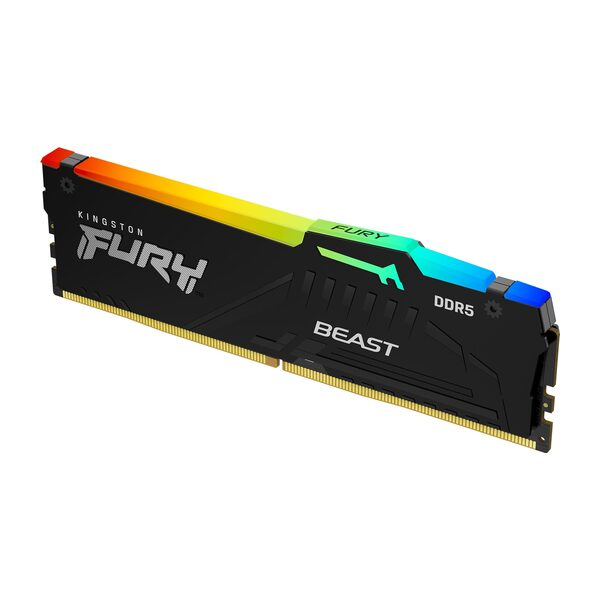
Chưa bán
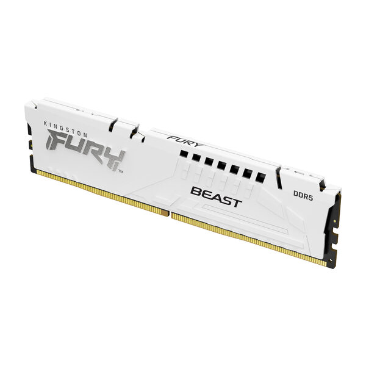
Chưa bán
Chưa bán
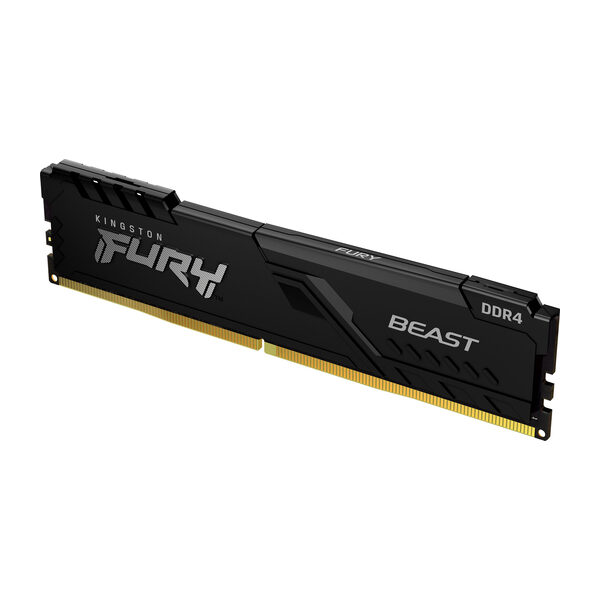
Chưa bán
Không có sản phẩm phù hợp.
 SingPC R53A595SF-W R5 3400G
10.990.000đ
SingPC R53A595SF-W R5 3400G
10.990.000đ ASUS AIO V440VA Core 5 210H 23.8 inch (V440VAK-WPC407W)
24.990.000đ
ASUS AIO V440VA Core 5 210H 23.8 inch (V440VAK-WPC407W)
24.990.000đ ROSA Crystal A10 Ryzen 3 3200G
8.190.000đ
ROSA Crystal A10 Ryzen 3 3200G
8.190.000đ HP AIO cr2012d Ultra 5 225U 23.8 inch (C20CBPA)
31.590.000đ
HP AIO cr2012d Ultra 5 225U 23.8 inch (C20CBPA)
31.590.000đ SingPC i512H682SF-W i5 12450H
11.990.000đ
SingPC i512H682SF-W i5 12450H
11.990.000đMainboard đời mới dùng DDR5, mainboard cũ dùng DDR4. Hai loại khác khe cắm nên không lắp lẫn được. Xem thông số mainboard trước khi mua.
| Loại | Dùng cho | Ghi chú |
|---|---|---|
| DDR5 | Mainboard đời mới (bản DDR5), AMD AM5 | Tốc độ cao hơn, giá cao hơn |
| DDR4 | Mainboard đời cũ | Rẻ hơn, dễ tìm |
Học tập, văn phòng: 8–16 GB. Chơi game, đồ họa: 16–32 GB. Nên lắp 2 thanh giống nhau để chạy kênh đôi.
Chọn máy tính để bàn có sẵn RAM 16 GB tại Thế Giới Di Động: lắp sẵn, bảo hành cả máy. Chơi game thì xem máy tính để bàn gaming.
| Sản phẩm | Dòng | Thông số chính | Ra mắt | Nguồn |
|---|---|---|---|---|
| G.Skill Trident Z5 CK | Trident Z5 | DDR5-9600, CU-DIMM, Kit 48GB (2x24GB) | 10/2024 | Trang hãng |
| Corsair Vengeance RGB DDR5 CUDIMM | Vengeance | DDR5-9200, CUDIMM, Kit 48GB / 96GB | 12/2024 | Trang hãng |
| TeamGroup T-Force Xtreem ARGB CKD DDR5 | T-Force Xtreem | DDR5 8400 MHz, Client Clock Driver, Intel XMP 3.0 | 04/2025 | Trang hãng |
| G.Skill Trident Z5 CK DDR5 10000 | Trident Z5 | — | Dự kiến 12/2026 | Trang hãng |
| Crucial DDR5 Pro Overclocking Edition | Crucial Pro | 6.000 MT/s, CL36-38-38-80, XMP 3.0 / AMD EXPO | 02/2024 | Trang hãng |
| Lexar ARES RGB DDR5 | ARES | DDR5 6000 MHz, CL32, Kit 32GB (2x16GB) | 03/2023 | Trang hãng |
| Kingston FURY Renegade DDR5 9600 RGB | Kingston FURY Renegade | — | Dự kiến 2027 | Trang hãng |
| Lexar ARES RGB DDR4 | ARES | DDR4 3600 MT/s, Lexar RGB Sync, Intel XMP 2.0 | 08/2023 | Trang hãng |
| Kingston FURY Renegade DDR5 | Kingston FURY Renegade | Tới 6400 MT/s, CL32, Intel XMP 3.0 | 07/2022 | Trang hãng |
| Kingston FURY Beast DDR5 8400 RGB | Kingston FURY Beast | — | Dự kiến 2027 | Trang hãng |
| Kingston FURY Renegade DDR5 RGB | Kingston FURY Renegade | Tới 6400 MT/s, CL32, Intel XMP 3.0 | 07/2022 | Trang hãng |
| Kingston FURY Renegade DDR5 CUDIMM | Kingston FURY Renegade | 8400 MT/s, CUDIMM, 24GB / kit 48GB | 10/2024 | Trang hãng |
| Kingston FURY Renegade DDR5 RGB Limited Edition | Kingston FURY Renegade | 8000 MT/s, Kit 48GB (2 thanh), Intel XMP 3.0 | 06/2024 | Trang hãng |
| Kingston FURY Renegade DDR4 | Kingston FURY Renegade | Tới 5333 MHz, CL13-CL20 | 07/2021 | Trang hãng |
| Kingston FURY Renegade DDR4 RGB | Kingston FURY Renegade | Tới 4600 MHz, CL15-CL19 | 07/2021 | Trang hãng |
| Kingston FURY Beast DDR5 | Kingston FURY Beast | DDR5 4800 MHz, Intel XMP 3.0 | 11/2021 | Trang hãng |
| Kingston FURY Beast DDR4 RGB Special Edition | Kingston FURY Beast | Tản nhiệt màu trắng, Thanh 8GB / 16GB, Intel XMP | 09/2022 | Trang hãng |
| Kingston FURY Beast DDR5 RGB | Kingston FURY Beast | Tới 6000 MT/s, Intel XMP 3.0, Thanh 8/16/32GB | 05/2022 | Trang hãng |
| Kingston FURY Beast DDR5 White | Kingston FURY Beast | Tản nhiệt màu trắng, Plug N Play 4800MT/s, XMP 3.0 / AMD EXPO | 03/2023 | Trang hãng |
| Kingston FURY Beast DDR5 RGB White | Kingston FURY Beast | Tản nhiệt màu trắng, 18 hiệu ứng RGB | 03/2023 | Trang hãng |
| Kingston FURY Beast DDR4 | Kingston FURY Beast | Tới 3733 MHz, CL15-CL19 | 07/2021 | Trang hãng |
Hướng dẫn cách chơi cờ vua cơ bản, đơn giản cho người mới bắt đầuDeep Learning là gì? Đóng vai trò gì trong công nghệ AI?IDM là gì? Cách khắc phục một số lỗi thường xảy ra với IDM nhanh chóngDuckduckgo là gì? Ưu, nhược điểm? Có nên sử dụng thay thế Google?Bass là gì? Những điều bạn cần biết về âm trầm trong âm nhạcGhi chú cho IT
Doc Bài viết liên quan - 6.4 Bước 3: thiếu bài thì lấy thêm theo trang cấp trên
Doc Bài viết liên quan - 6.5 Bước 4: hiển thị khối
Ca này: Tag của Ngành hàng có từ 5 bài, lấy 5 bài mới nhất.
Thứ tự lấy bài, bài mới trước trong mỗi cấp, bài trùng chỉ hiện 1 lần:
1. Tag của Ngành hàng (chính trang) laptop, khai tay để minh hoạ ca này (mặc định sẽ là ram máy tính): có 22 bài, lấy 5 bài.
Nút Xem tất cả: /blog/chu-de/laptop (trang chủ đề của Tag laptop).
Card bài giống /tin-tuc: ảnh, tiêu đề, tác giả, thời gian; không có nhãn tên hệ.
Vị trí khối: cuối trang, ngay dưới bài viết SEO của trang. Bấm “Bài viết SEO: Không” để xem trang chưa có bài viết SEO: khối nằm cuối nội dung chính, trên chân trang.
Ghi chú cho IT
Doc Bài viết liên quan - 6.4 Bước 3: thiếu bài thì lấy thêm theo trang cấp trên
Doc Bài viết liên quan - 6.5 Bước 4: hiển thị khối
Ca này: Tag của Ngành hàng có dưới 5 bài. Ngành hàng không có cấp trên nên khối chỉ hiện đúng số bài đang có, không lấy thêm.
Thứ tự lấy bài, bài mới trước trong mỗi cấp, bài trùng chỉ hiện 1 lần:
1. Tag của Ngành hàng (chính trang) ram máy tính, mặc định: có 1 bài, lấy 1 bài.
Nút Xem tất cả: /blog/chu-de/ram-may-tinh (trang chủ đề của Tag ram máy tính).
Card bài giống /tin-tuc: ảnh, tiêu đề, tác giả, thời gian; không có nhãn tên hệ.
Vị trí khối: cuối trang, ngay dưới bài viết SEO của trang. Bấm “Bài viết SEO: Không” để xem trang chưa có bài viết SEO: khối nằm cuối nội dung chính, trên chân trang.
Ghi chú cho IT
Doc Bài viết liên quan - 6.4 Bước 3: thiếu bài thì lấy thêm theo trang cấp trên
Doc Bài viết liên quan - 6.5 Bước 4: hiển thị khối
Ca này: không có bài nào khớp, ẩn cả khối, không để khung trống. Trang hiện như chưa có khối.
Thứ tự lấy bài, bài mới trước trong mỗi cấp, bài trùng chỉ hiện 1 lần:
1. Tag của Ngành hàng (chính trang): giả định chưa có bài nào mang Tag này.
Không hiện nút Xem tất cả vì khối ẩn.
Card bài giống /tin-tuc: ảnh, tiêu đề, tác giả, thời gian; không có nhãn tên hệ.
Vị trí khối: cuối trang, ngay dưới bài viết SEO của trang. Bấm “Bài viết SEO: Không” để xem trang chưa có bài viết SEO: khối nằm cuối nội dung chính, trên chân trang.
Các sản phẩm trên trang cùng hãng, cùng loại nên chưa có tiêu chí lọc thêm.
Đã ngừng kinh doanh tại Thế Giới Di Động, thông tin để tham khảo.

Ngừng kinh doanh
Không có sản phẩm phù hợp.
 Máy in laser trắng đen Brother HL-L2321D
3.290.000đ
Máy in laser trắng đen Brother HL-L2321D
3.290.000đ Máy in laser trắng đen Canon LBP6030W Wifi
3.790.000đ
Máy in laser trắng đen Canon LBP6030W Wifi
3.790.000đ Máy in phun màu HP Smart Tank 580 Wifi (1F3Y2A)
3.490.000đ
Máy in phun màu HP Smart Tank 580 Wifi (1F3Y2A)
3.490.000đ Máy in phun màu đa năng Epson L3350 Wifi (C11CL62503)
4.590.000đ
Máy in phun màu đa năng Epson L3350 Wifi (C11CL62503)
4.590.000đ Máy in laser trắng đen Pantum P2505W
2.540.000đ
Máy in laser trắng đen Pantum P2505W
2.540.000đ Máy in phun trắng đen đơn năng Canon PIXMA GM2070 Wifi
Từ 1.940.000đMới
Máy in phun trắng đen đơn năng Canon PIXMA GM2070 Wifi
Từ 1.940.000đMới  Máy In Phun Màu HP đa năng in scan copy Ink Tank 415 WiFi (Z4B53A)
Từ 1.688.727đMới
Máy In Phun Màu HP đa năng in scan copy Ink Tank 415 WiFi (Z4B53A)
Từ 1.688.727đMới  Máy In phun màu đơn năng Canon PIXMA G1010
Từ 1.300.000đMới
Máy In phun màu đơn năng Canon PIXMA G1010
Từ 1.300.000đMới  Máy in phun màu đa năng HP Smart Tank 580 Wifi (1F3Y2A)
Từ 1.930.000đMới
Máy in phun màu đa năng HP Smart Tank 580 Wifi (1F3Y2A)
Từ 1.930.000đMới  Máy in laser trắng đen đơn năng HP 108w (4ZB80A)
Từ 1.720.000đMới
Máy in laser trắng đen đơn năng HP 108w (4ZB80A)
Từ 1.720.000đMới Giấy in nhiệt có lớp phủ đổi màu khi gặp nhiệt, máy in nhiệt không cần mực. Hợp in hoá đơn, tem nhãn, phiếu giao hàng. Chữ in nhiệt phai dần theo thời gian nên không dùng cho giấy tờ cần lưu lâu; tài liệu văn phòng vẫn dùng giấy A4 với máy in laser hoặc in phun.
Mỗi mẫu vẫn còn trang sản phẩm riêng để xem thông số, đánh giá và hỏi đáp.
| Sản phẩm | Thông số chính | Ra mắt | Trang sản phẩm |
|---|---|---|---|
| Giấy in nhiệt HPRT MT610 - 200 tờ | Giấy in nhiệt, 200 tờ | Không ghi | Xem trang |
Xem máy in đang bán: máy in laser, in phun, đa năng, bảo hành chính hãng và trả chậm 0%.
Hướng dẫn cách chơi cờ vua cơ bản, đơn giản cho người mới bắt đầuDeep Learning là gì? Đóng vai trò gì trong công nghệ AI?IDM là gì? Cách khắc phục một số lỗi thường xảy ra với IDM nhanh chóngDuckduckgo là gì? Ưu, nhược điểm? Có nên sử dụng thay thế Google?Bass là gì? Những điều bạn cần biết về âm trầm trong âm nhạcGhi chú cho IT
Doc Bài viết liên quan - 6.4 Bước 3: thiếu bài thì lấy thêm theo trang cấp trên
Doc Bài viết liên quan - 6.5 Bước 4: hiển thị khối
Ca này: Tag của Ngành hàng có từ 5 bài, lấy 5 bài mới nhất.
Thứ tự lấy bài, bài mới trước trong mỗi cấp, bài trùng chỉ hiện 1 lần:
1. Tag của Ngành hàng (chính trang) laptop, khai tay để minh hoạ ca này (mặc định sẽ là giấy in): có 22 bài, lấy 5 bài.
Nút Xem tất cả: /blog/chu-de/laptop (trang chủ đề của Tag laptop).
Card bài giống /tin-tuc: ảnh, tiêu đề, tác giả, thời gian; không có nhãn tên hệ.
Vị trí khối: cuối trang, ngay dưới bài viết SEO của trang. Bấm “Bài viết SEO: Không” để xem trang chưa có bài viết SEO: khối nằm cuối nội dung chính, trên chân trang.
Ghi chú cho IT
Doc Bài viết liên quan - 6.4 Bước 3: thiếu bài thì lấy thêm theo trang cấp trên
Doc Bài viết liên quan - 6.5 Bước 4: hiển thị khối
Ca này: Tag của Ngành hàng có dưới 5 bài. Ngành hàng không có cấp trên nên khối chỉ hiện đúng số bài đang có, không lấy thêm.
Thứ tự lấy bài, bài mới trước trong mỗi cấp, bài trùng chỉ hiện 1 lần:
1. Tag của Ngành hàng (chính trang) giấy in, mặc định: có 1 bài, lấy 1 bài.
Nút Xem tất cả: /blog/chu-de/giay-in (trang chủ đề của Tag giấy in).
Card bài giống /tin-tuc: ảnh, tiêu đề, tác giả, thời gian; không có nhãn tên hệ.
Vị trí khối: cuối trang, ngay dưới bài viết SEO của trang. Bấm “Bài viết SEO: Không” để xem trang chưa có bài viết SEO: khối nằm cuối nội dung chính, trên chân trang.
Ghi chú cho IT
Doc Bài viết liên quan - 6.4 Bước 3: thiếu bài thì lấy thêm theo trang cấp trên
Doc Bài viết liên quan - 6.5 Bước 4: hiển thị khối
Ca này: không có bài nào khớp, ẩn cả khối, không để khung trống. Trang hiện như chưa có khối.
Thứ tự lấy bài, bài mới trước trong mỗi cấp, bài trùng chỉ hiện 1 lần:
1. Tag của Ngành hàng (chính trang): giả định chưa có bài nào mang Tag này.
Không hiện nút Xem tất cả vì khối ẩn.
Card bài giống /tin-tuc: ảnh, tiêu đề, tác giả, thời gian; không có nhãn tên hệ.
Vị trí khối: cuối trang, ngay dưới bài viết SEO của trang. Bấm “Bài viết SEO: Không” để xem trang chưa có bài viết SEO: khối nằm cuối nội dung chính, trên chân trang.